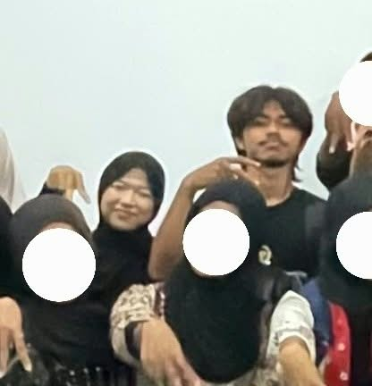
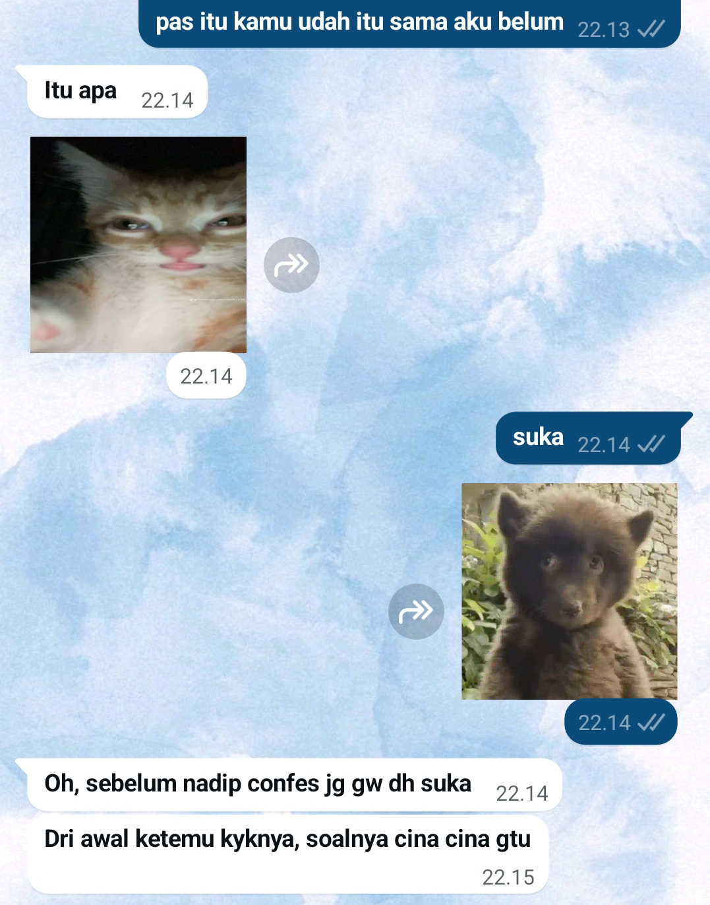

Haloo!! Ini kembarannya Nick🦊
his name is Muhammad Hadi Pratama, i called him Dipra.
Haloo!! Ini kembarannya Nick🦊
Haii! this is my pinesit gweh. Aku suka sama dia dari tanggal 27 Desember 2025 hingga saat ini (terhitung sudah 10 bulan). Nama lengkapnya Muhammad Hadi Pratama, biasa dipanggil Hadi. Aku juga kalo manggil dia gitu, tapi sebenernya diam-diam aku punya panggilan khusus buat dia, yaitu DIPRAAA (di ambil dari haDI PRAtama) dan aku belum kasih tau dia wkwk. Rumahnya di Leuwihmunding, Majalengka. Katanya dia mantan preman pasar Leuwihmunding wkwk. Selain itu, dia juga tinggi bangettt, kira-kira kurang lebih 170cm dan aku cuma setelinganya dia.

Dia tuh tipe orang yang auranya beda dari yang lain, aur-auran gitu deh pokoknya wkwk. Dari luar kelihatannya tenang dan kalem (terkadang), padahal aslinya dia aneh, plenger, anomali, dan jadi moodbooster banget buat orang-orang di sekitarnya. Dia juga suka banget sama kucing, dimana ada kucing disitu ada dia. Sekarang rambutnya mullet, jujurly nambah ganteng. Dan juga love language-nya physical touch (suka nyenggol-nyenggol aku). Yang bikin aku kagum, dia peka sama hal-hal kecil dan selalu menghargai orang lain, bahkan sama orang yang baru dia kenal sekalipun. Aku juga sering liat dia belajar hal-hal baru, dan entah kenapa itu lucuuuu bangetttt. Pokoknya everything about him is always cute (prengg). Dan yang paling penting.. dia juga suka sama aku (ini rill no pek).
no pict = hoax (～￣▽￣)～

Btw dia cowok bingung, tapi entah kenapa aku maklumin. Mungkin karena akunya juga cewe bingung kali ya. Eh tapi tapi.. dia bukan cowo bingung kaya cowo cowo bingung lainnya, ya pokoknya dia beda. Dia bingung tapi jelas. Alasan dia bingung juga karena dia belum siap buat hadir di kehidupan aku (katanya). Menurutku mah, lebih baik gitu dari pada cowo agresif yang maunya buru-buru jalin hubungan.
OH IYA, DIA GENGSIANNNNNNNNN
fyi: ini baru keliatannya aja, sifat aslinya diluar nalar
Mungkin karena ini..
i know this is kinda weird, but i just want to tell you that i like you.
i've liked you for a while now, and i can't keep it to myself anymore.
you're an amazing person, and i admire you a lot. i hope we can get to
know each other better. btw kapan mabar roblox lagi.
Sincerely,
Nadip Imup
+ dear yang deket sama dia, tolong hapus stiker kucing melet itu!!
+ dan stiker HAYYA!!